介绍
第一部分 基础
- sql 是一门 十分高级的语言：做什么 而不是 怎么做；
- 数据库管理系统 figures out 最好的执行查询的方法？ 查询优化
- useage:
- define database structure
- query a database;
- update ;
- 包括：
- ddl:定义数据库结构
- dml： 查询与更新
- ； 结束
ddl :data define language
-
create:
-
table:define table name attributes,attributes'type
- view: user view of data;
-
index: 指定的属性上建索引
-
drop:
-
table:delete table,attributes and values
- view
-
index
-
alter :改变属性值（一些）
dml :data manipulation language
Note
insert ;delete;update;select from where;增删改查
定义一个关系模式
- 建表 create table name(list of elements); elements:
- 属性和他们的类型
- 键的声明
- 约束
基本类型
char(n);varchar(n);int;smallint;numeric(p,d);real,double precision
删除数据库对象
-
drop: database,table,view,index,trigger; -
delete from
改变列
增加或者删除关系的一个属性
- 使用
alter table r add/drop <column> - 栗子：
一些习题
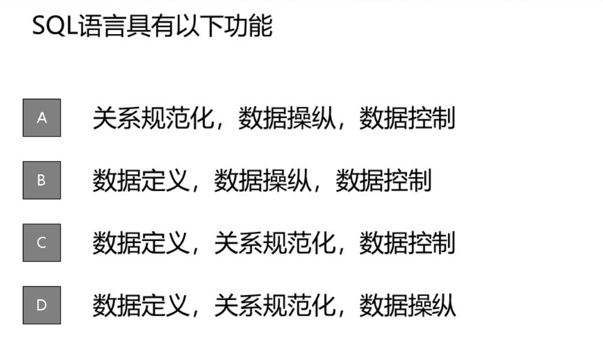
b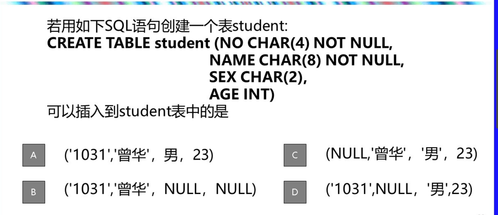
a 男是字符，引号，故不选 b实体完整性
键的声明
| 键名 | 区别 1 | 2 |
|---|---|---|
primary key |
只能有一个 | 不可为空值 |
unique |
可有多个 | 可为空 |
一些 dbms 有制造自己的区别，例如会为主键建索引（加快查询），而不是 unique
两者的声明分为两类：
-
单值：放在属性类别声明的后边
name char(20) unique -
多个值： 只能如此another element 放在后边;单值也适用
unique(bar,beer)
一些题
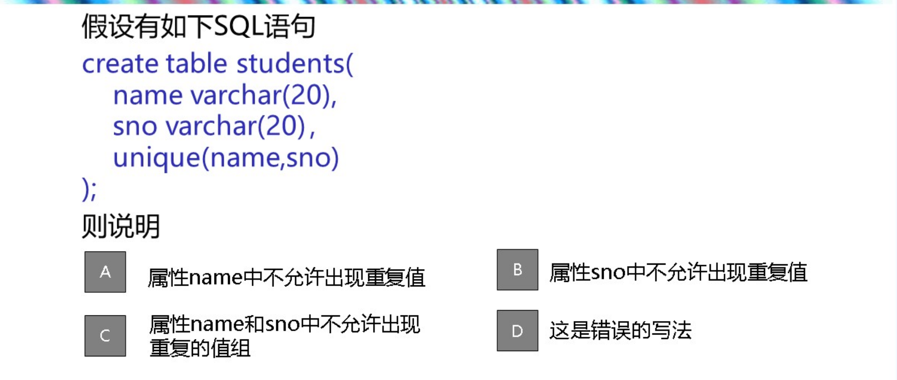
c注意不同
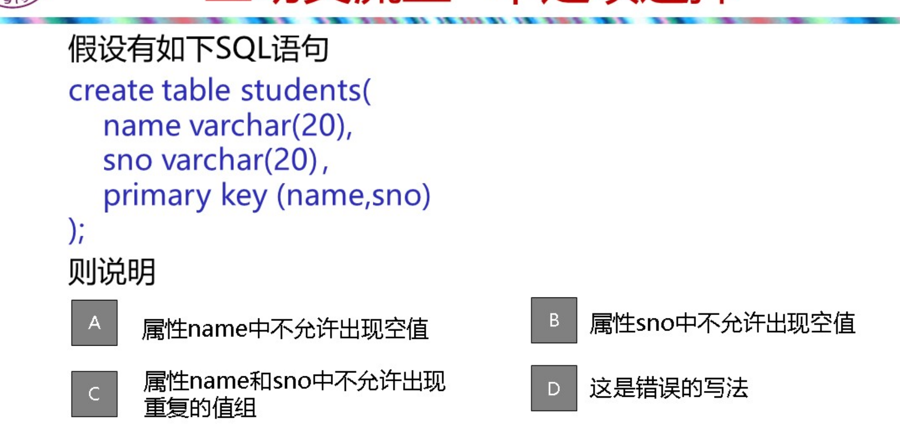
abc外键
表达
同样两种方式：
- 一个：在属性定义时，
references <relation>(<attribute>) - 作为模式的一个元素：
foreign key (<list of attributes>) references <relation> (<attributes>)
create table beers{
name char(20) primary key,
manf char(20)
};
create table sells(
bar char(20),
beer char(20),
price real,
foreign key (beer) references beers(name)
);
得到
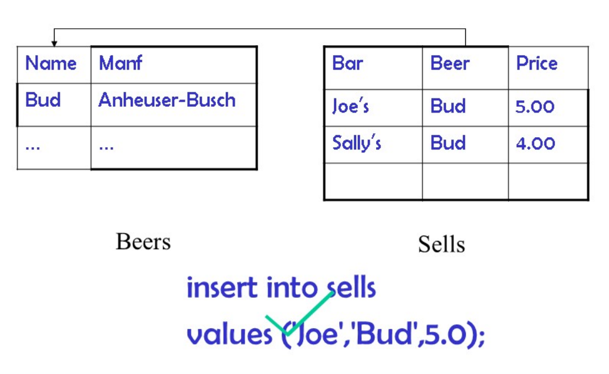
Note
参照的属性必须被声明为主键或者unique(唯一性)
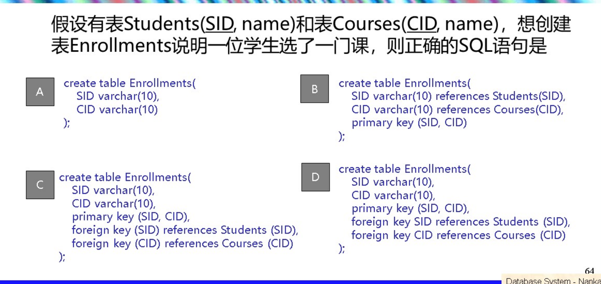
bc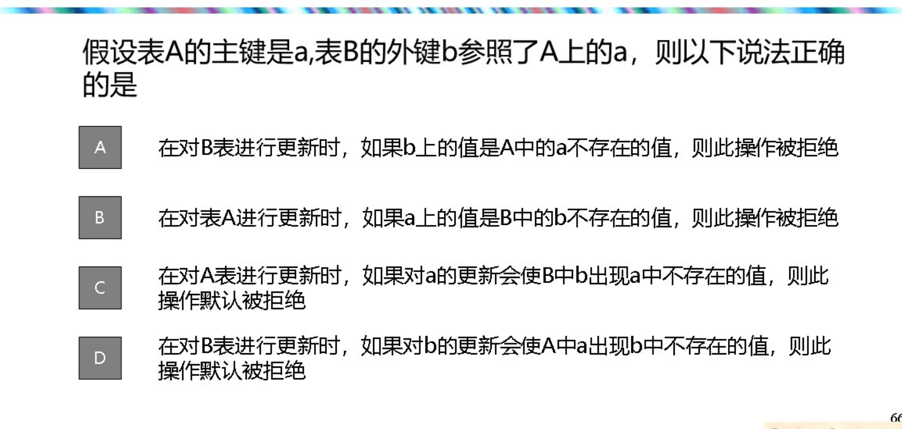
ac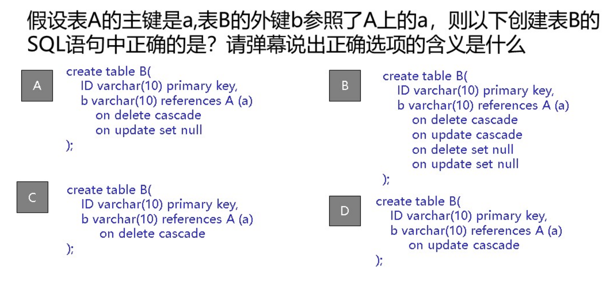
acd维护引用完整性
当数据库被更新时，三个方式
1. Default 缺省
拒绝更新，当违反引用完整性时
2. cascade 级联
直观上，引用属性（源）的改变 被仿造 到外键（目的） 上
删除：
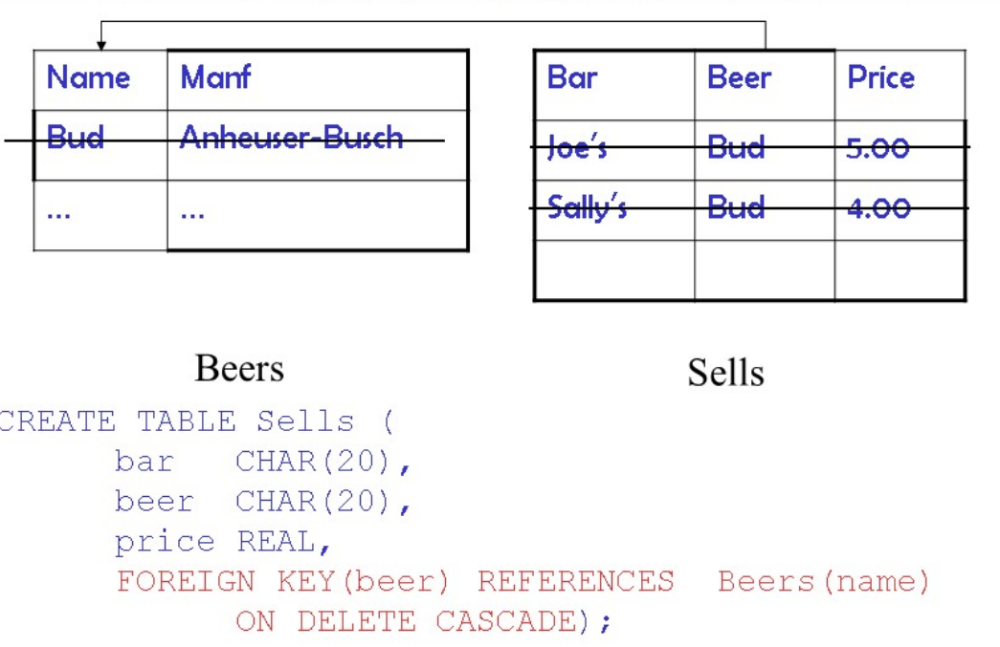
更新：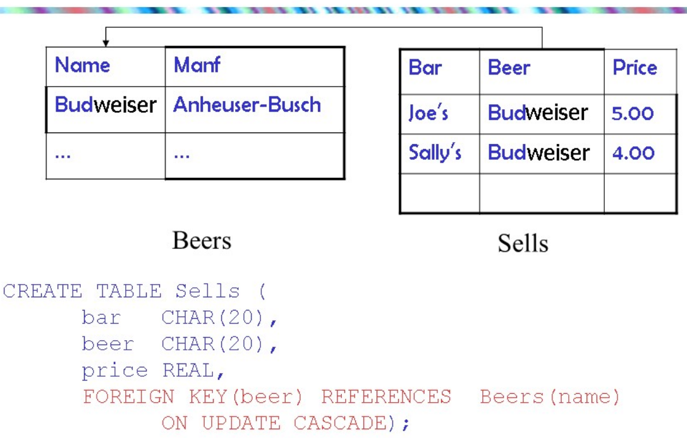
3.set NULL
删除：
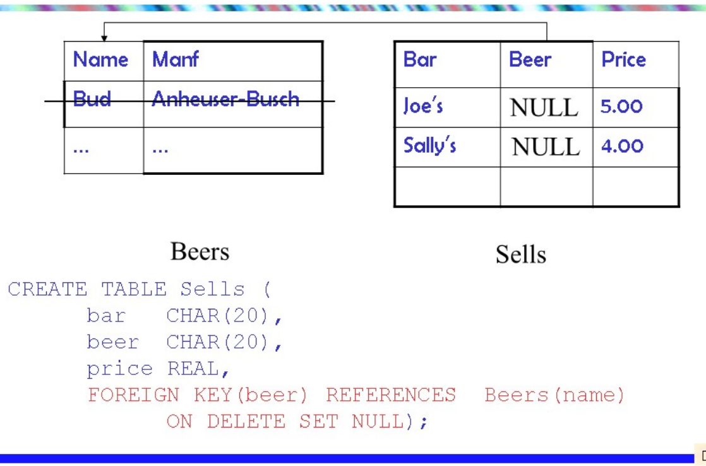
更新：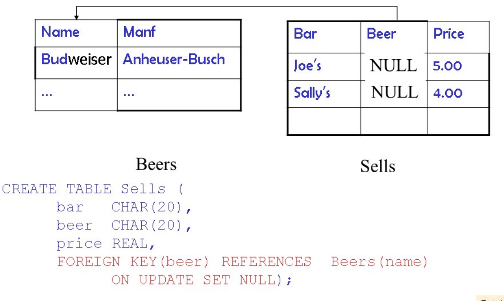
其他对属性的声明
- not null
- default
-
check
-
属性
create table sells(
bar char(20),
beer char(20) check (beer in (select name from beers)),
price real check (price <=5.00)
);
check on beer 像 外键约束，只是： 更新**插入时才会调用，删除** 更新 不会调用
- 元组
%只有joe的酒吧可售超过5美元的啤酒
create table sells(
bar char(20),
beer char(20),
price real,
check(bar='Joe"s Bar' OR price <= 5.00>)
);
alter table sells add check(bar='Joe's Bar or beer<>'Miller'');
第三部分 sql queries and sql injection
查询
principal form:
select desired attributes from relations where condition about tuple variables;
- =和 in
Note
字符串 单引号
where manf in ('A co.','B co.')
or
where manf in ('A co.','B co.')
```
- star as list of all attribute,
> 当 from 只有一个关系的时候，
- 重命名列 `as<new name>`
- 列中也可以出现表达式(作为值)
!!! example
sells(bar,beer,price)
```sql
select bar,beer,price*120 as priceinyen
from sells;
Note
不可出现 where 句？
- 列中出现字符串常量；（confused?）
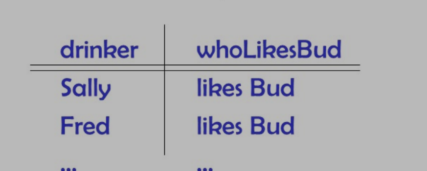
Example
sells(bar,beer.price)
find the price joe's bar charges for bud
```sql
select price
from sells
where bar='joe"s bar' and beer='bud';
```
Note
- 字符串中的双引号代表一个单一好
- 比较运算符：<>不等于
- where 句中的条件可以使用逻辑运算符（and or not）
- sql 对大小写不敏感，只是在被引的字符串中敏感
injection
- 起因：程序利用字符串构造的方式执行
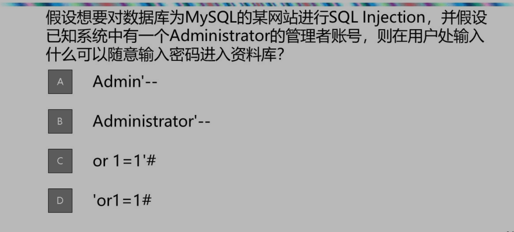
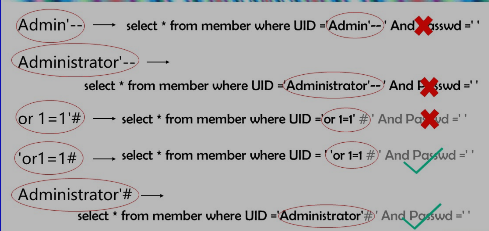
第四部分
patterns where 语句？
- "属性 like patttern"
- % 任何字符串
- _ 任意一个字符串
- not like
Example
drinkers(name,addr,phone) * find drinkers whose phone has prefix 555.
```sql
select name
from drinkers
where phone like '555%'
```
空值
含义
- unknown value: e.g.j 的吧一定有地址，只是我们不知道是啥
- inapplicable: e.g.单身汉没有配偶属性
三值逻辑条件
true,false,unknown
- 任意值与 null 相比，真值为unknown
- 什么时候查询才会出结果？当 where 从句中真值为true（不是 false or unknown）时
closer
- true =1; false=0; unknown =1/2;
- and =min; or = max; not(x)=1-x;
!!! example"surprsing"
| bar | beer | price |
|---|---|---|
| joe's bar | bud | null |
```sql
select bar
from sells
where price<2.00 or price>=2.00;
#未知or未知
# 未知
```
- joe's bar 不会出现在结果中，尽管 where 是重言式（tautology）
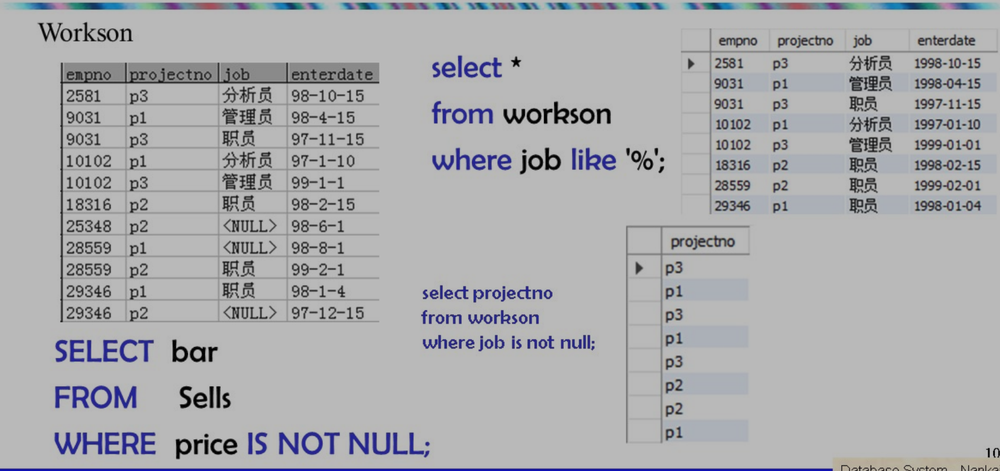
order by
asc desc
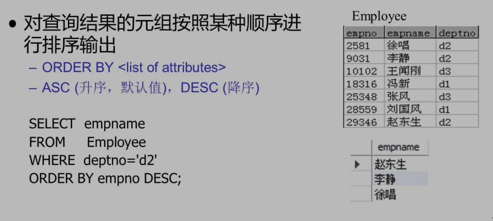
多表查询
- list of relations in from clause
- relation.attribure disambiguates attributes from several relations with the same name.
Example
likes(drinker,beer);frequents(drinker,bar) find the beers that the frequrnters of joe's bar like.
-
自然连接 natural join
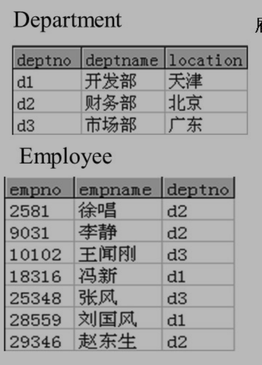
-
q1:雇员信息以及所在部门名称和地点？
or
select empno,empname,employee,deptno,deptname,location from employee,department where employee.deptno=department.deptno;or
-
q2:工作地点在天津的所有雇员信息以及所在部门名称和地点？
- q3:工作地点在天津的雇员姓名？
练习
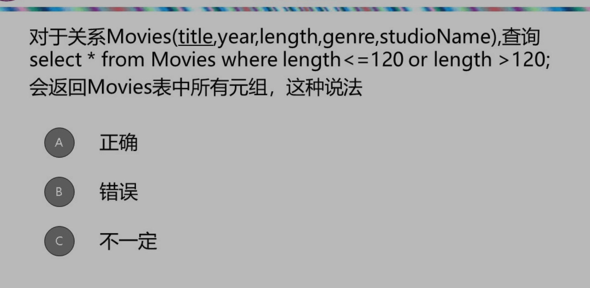
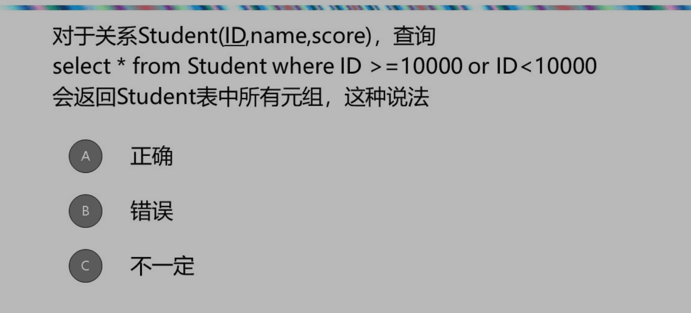
主键不允许出现空值
- natural join 也可以多表连接
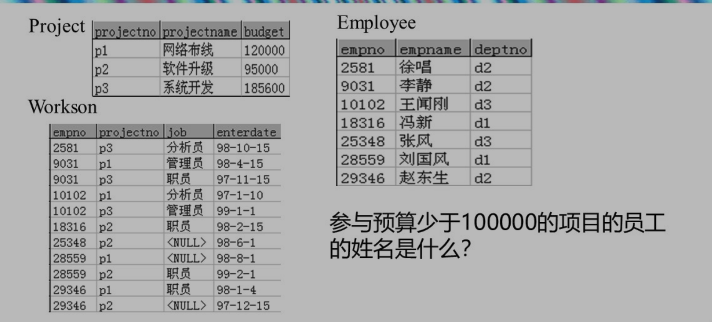
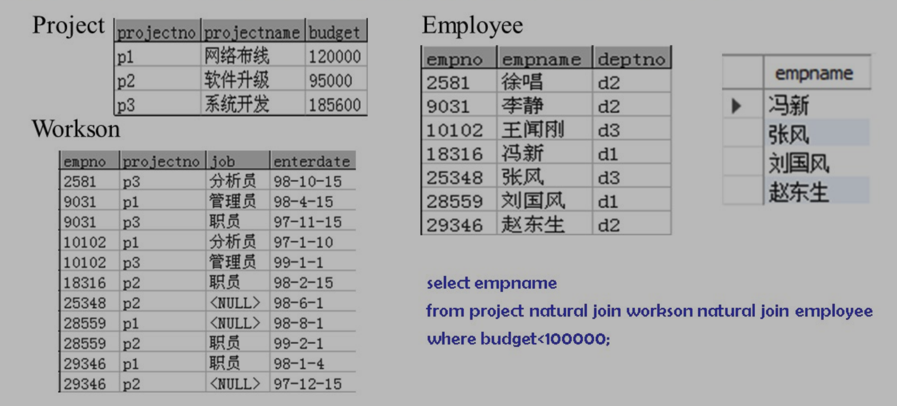
第五部分
explicit tuple variables
实际上只是起了别名 需要参考多个 相同关系的拷贝->use tuple variables as aliases of the relations
Example1
- 找到一对由同一个厂家生产的啤酒；find pairs of beers by the same manufacturer;
Beers(name,manf)
Example2
- 找到隶属同一部门的员工对
select e1.empname,e2.empname
from employee e1,employee e2
where e1.deptno=e2.deptno and
e1.empname<e2.empname #去掉重名
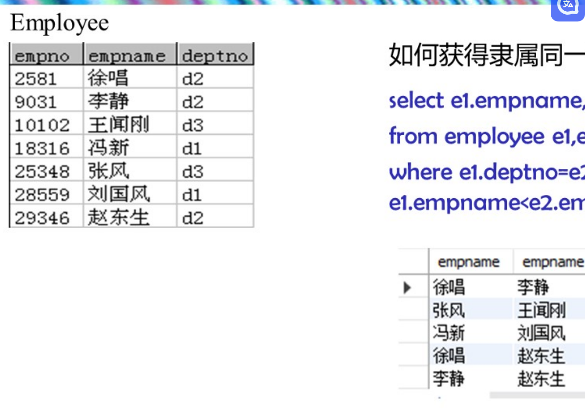
Subqueries 子查询
- meaning: 一个查询结果可以用在另一个查询的 where 语句中
Example
Sells(bar,beer,price)
- find bars that serve Miller at the same price Joe charges for Bud
the in operator
meaning: "tuple in relation" is true iff the tuple is in the relation
Example
find the name and manufacture of beers that Fred likes.
beers(name,manf);likes(drinker,beer);
若用两个关系而不是一个关系
- 也有 not in
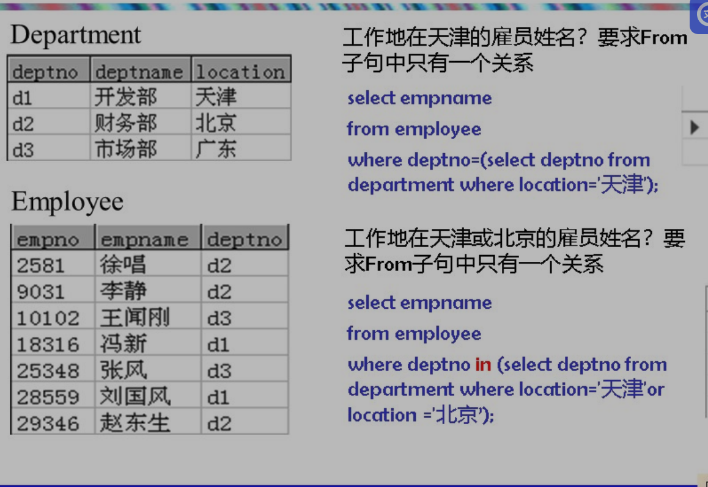
- 一个满足可用=，多个用 In
exits
"exits(relation)" is true iff the relation is nonempty.
- unique and exits? how can they be together? 请记住吧
Example
beers(name,manf)
- find the beers that are unique beer by their manufacturer.
- 雷同的另一个例子：
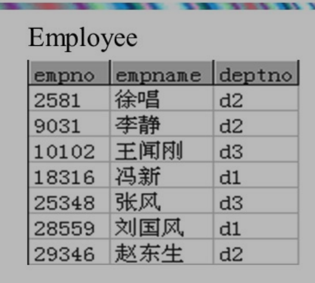
查找部门中只有一名员工的员工姓名
select empname
from employee e1
where not exists(
select *
from employee
where deptno=e1.deptno
and empname<> e1.empname
);
ANY，ALL quantifiers
any
- meaning: x= any(
) is true if and only if x equals at least one tuple in the relation.
说人话： x 是关系表中的一员（x in
）
- 同样的，= 可以换成其他任何比较的操作符
Note
tuples must have one component only.
all
- x<>all(relation) is true iff for every tuple in the relation ,x is not equal to t.
说人话： x 不是该关系表的成员（x not in
)
- 同样的，<>可以换成其他任何比较的操作符
Note
tuples must have one component only.
例子
Example
sells(bars,beer,price)
- find the beers sold for the highest price.
- find the beers not sold for the lowest price
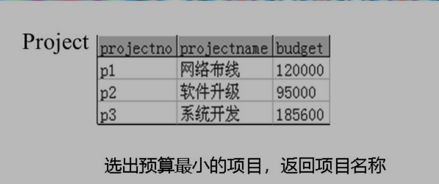
一些题 2
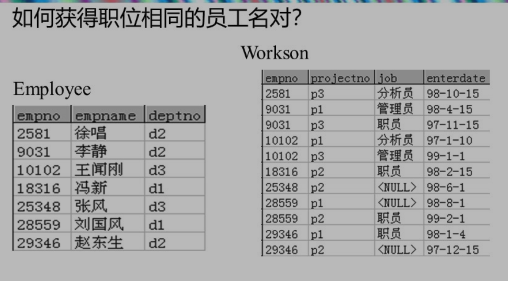
select e1.empname,e2.empname
from employee e1 natural join workson w1 ,employee e2 natural join workson w2
where w1.job=w2.job and e1.empname<e2.empname;
- 注意使用小于而不是不等于，不等于的话交换顺序还是重复了呀
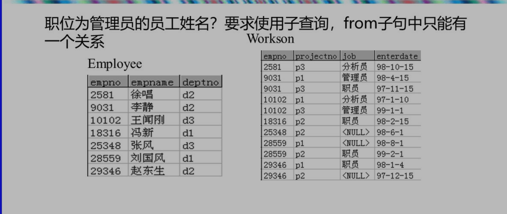
使用 in 啦
4:
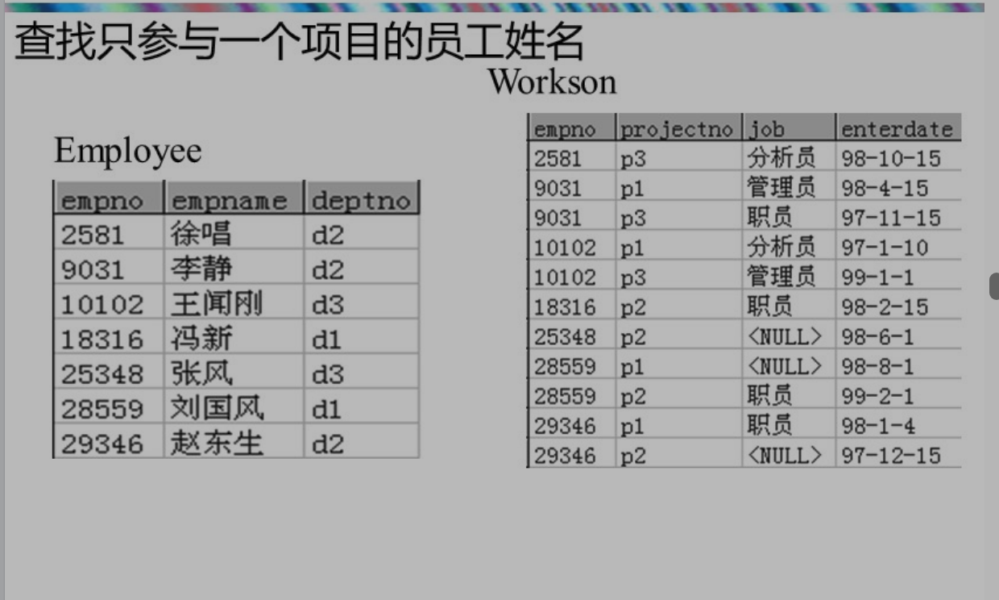
select e1.name
from employee e1 natural join workson w1
where not exists(
select *
from employee natural join workson
where name=e1.name and projectno<>w1.projectno
);
课件的写法：
select empname
from employee
where empno in(
select empno
from worksom w1
where not exits(select *
from workson
where workson.empno=w1.empno and workson.projectno <>w1.projectno)
)
5:
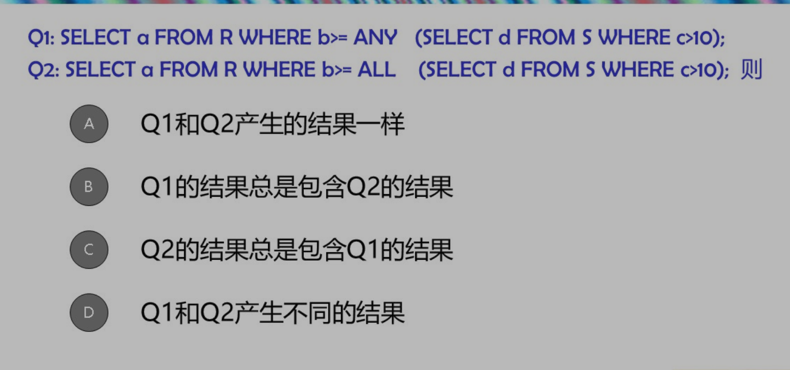
- any 与 all 的区别：
空集情形 如果子查询没有返回任何行，
b >= ANY (empty set) → 整个条件为 FALSE（因为不存在“至少一个”可比的值）。
b >= ALL (empty set) → 整个条件为 TRUE（因为“对所有值都成立”的空集命题在逻辑上是空集蕴涵，视为真）。
第六部分
Union Intersection Difference
Example
likes(drinker<\u>,beer<\u>); Sells(bar<\u>,beer<\u>,price);
Frequents(<u>drinker<\u>,<u>bar<\u>)
找到喝酒的人和啤酒 喝酒的人喜欢这款啤酒并且 经常去一个卖这款酒的酒吧
```sql
(select * from likes)
intersect
(select drinker,beer
from sells,frequents
where frequents.bar=sells.bar);
```
forcing set/bag semantics
- deafault fot select from where is bag;
- default for union, intersection ,ot difference is set
-
force set semantics with DISTINCT after SELECT
-
expensive execution.better be worth it.
Example
find the different prices for beers sells(bar<\u>,beer<\u>,price)
聚合 aggregations
sum,avg,min,max,count,and count(*)
Example
sells(bar<\u>,beer<\u>,price)
```sql
select avg (price)
from sells
where beer='Bud'
select count(distinct price)
from sells
where beer='Bud';
```
所有项目的平均预算？`select avg(budget)`
所有项目的最少预算？`select min(budget)`
Groping
-
group by(attribute list); -select from where group by
-
the result of from where clausrs is grouped by values of the group-by attribute list aggregations take place within each group
Example
sells(bar<\u>,beer<\u>,price)
find the average sales price for each beer
```sql
select beer,avg(price)
from sells
group by beer;
```
frequents(<u>drinker<\u>,<u>bar<\u>)
```sql
select drinker,avg(price)
from frequents,sells
where beer='Bud' and frequent.bar=sells.bar
group by drinker;
```
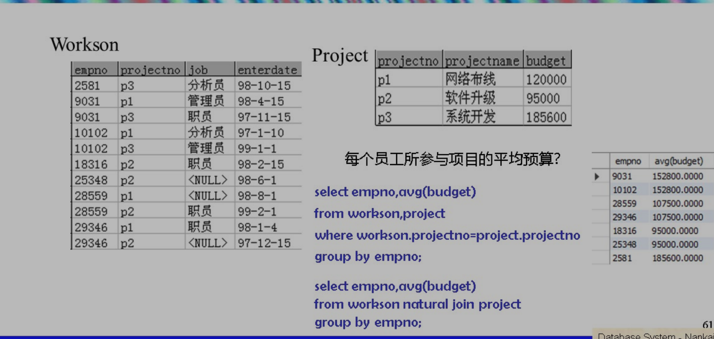
select lists with aggreaation
sells(bar,beer,price)
不可以：
rule:select 语句中的元素要么被 aggregated or 出现在 groupby 语句中
- 找到酒吧 卖 bud 最便宜
Having clause
- are selections on groups
Example
beers(name<\u>,manf);sells(beer<\u>,price) * find the average price of those beers that are either served in at least 3 bars or manufactured by busch
select beer,avg(price)
from sells
group by beer
having count(\*)>3 or beer in (select name from beers where manf='Busch');
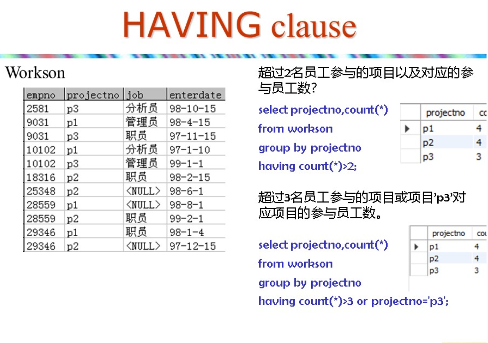
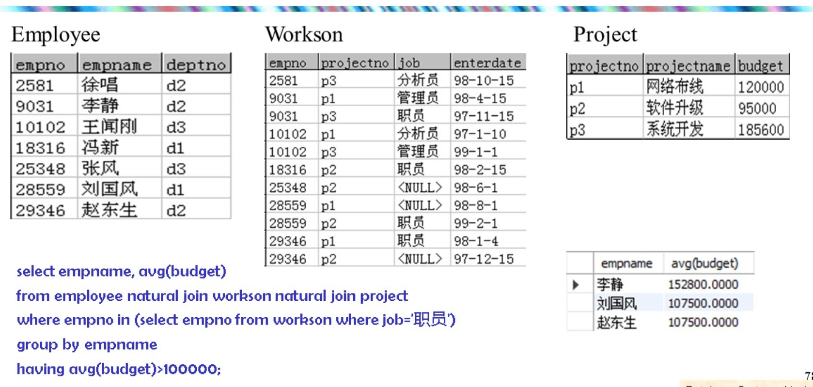
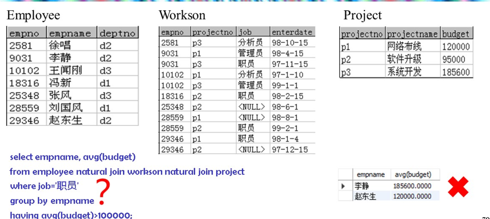
null 就不会拼接了把